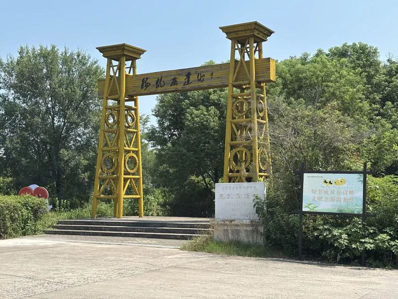
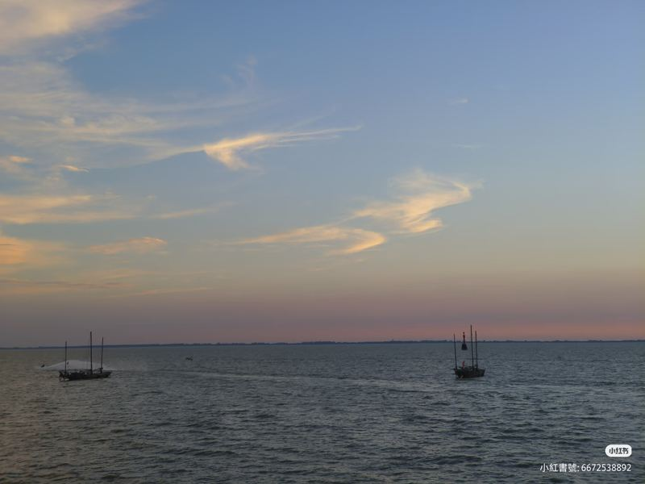

穿越千年 · 高邮故事
沿湖展开的历史长卷

古代 · 因水而生
水利建设 · 运河交通 · 农业生产形成
唐代平津堰、明代南关坝等水利工程陆续建成，运河交通带来南北货物，圩田农耕奠定了里下河稻作根基。

近现代 · 因水而兴
乡村生活 · 渔业发展 · 传统技艺传承
沿湖渔村逐水而居，鱼鹰捕鱼、稻鸭鱼蟹共作成熟；高邮民歌与咸鸭蛋腌制技艺在民间口耳相传。

今日 · 因水而新
遗产保护 · 数字化活化利用
2017 年入选中国重要农业文化遗产，2021 年列入世界灌溉工程遗产名录。数字技术让古老水脉焕发新生。